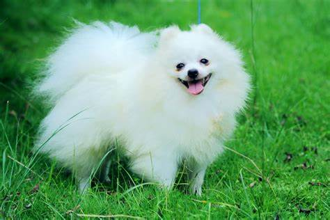
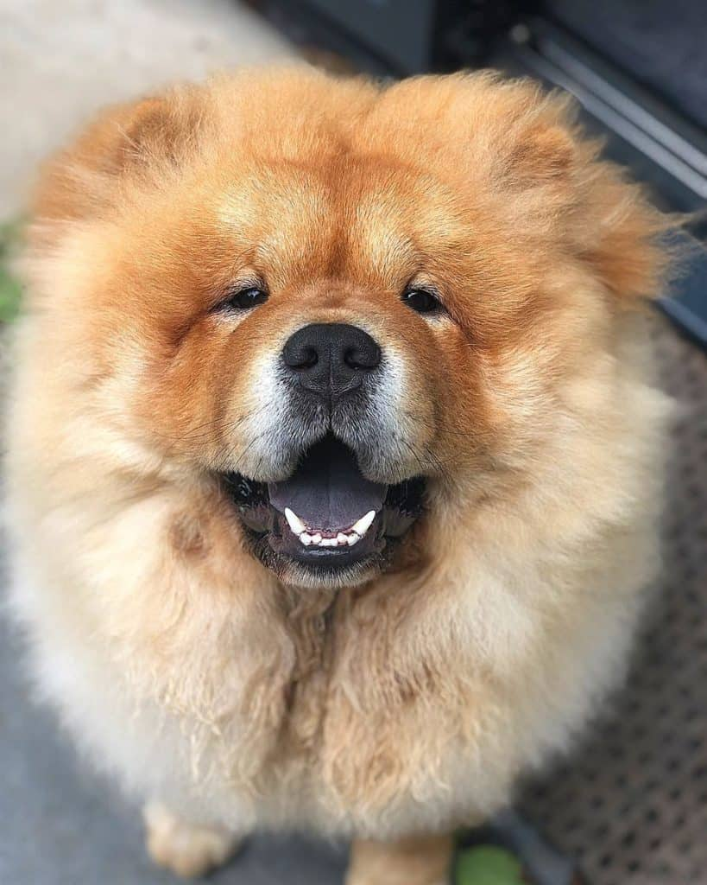
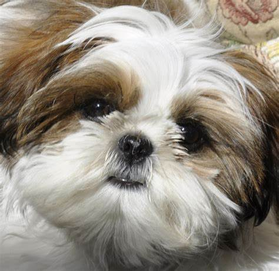
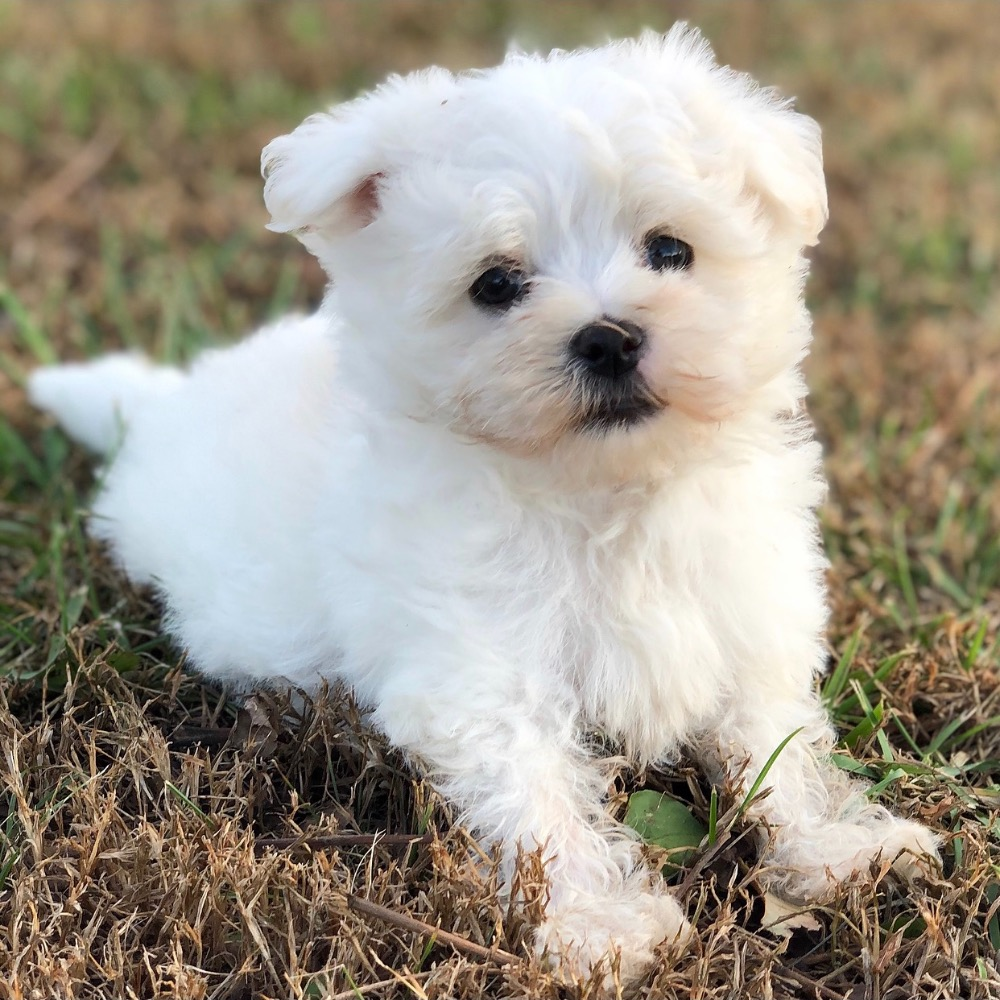
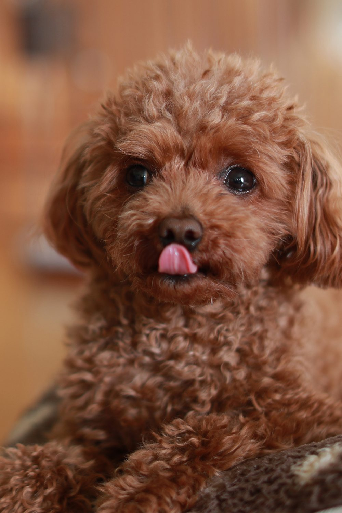
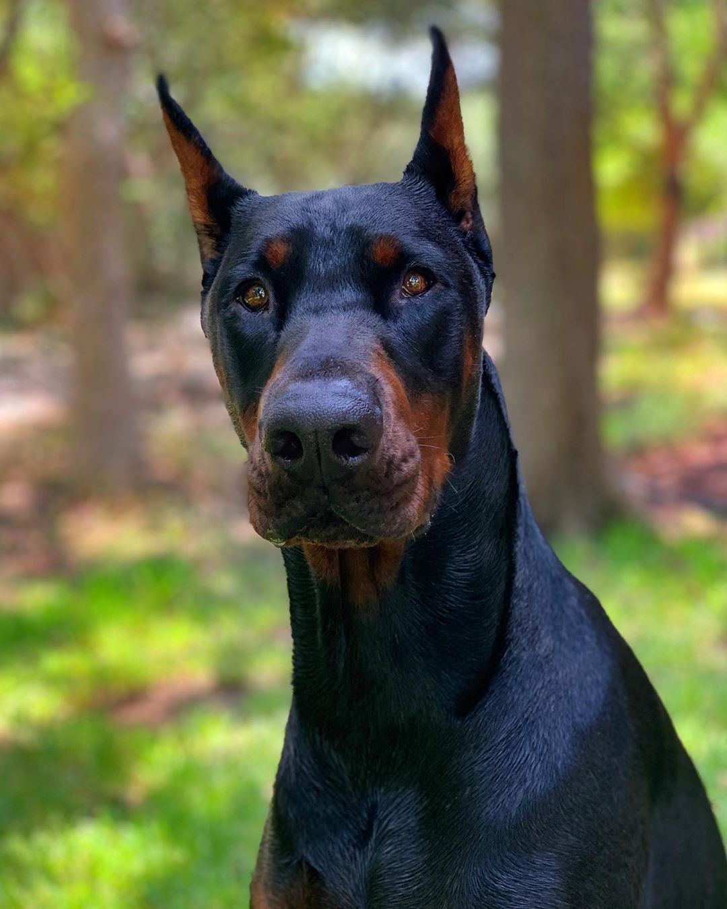
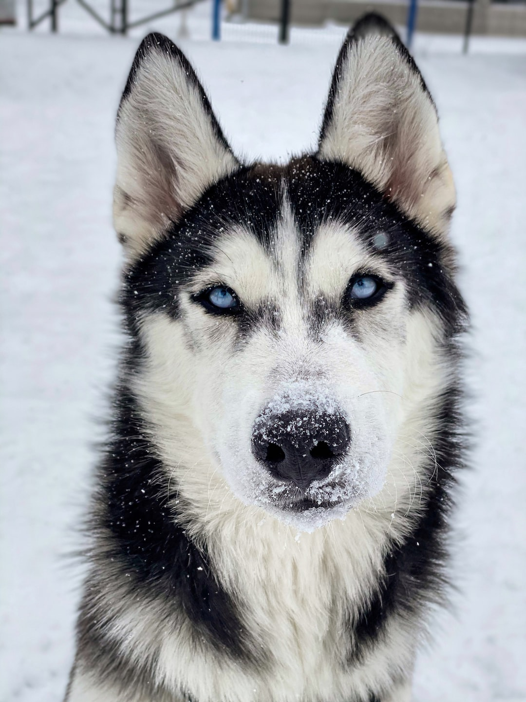
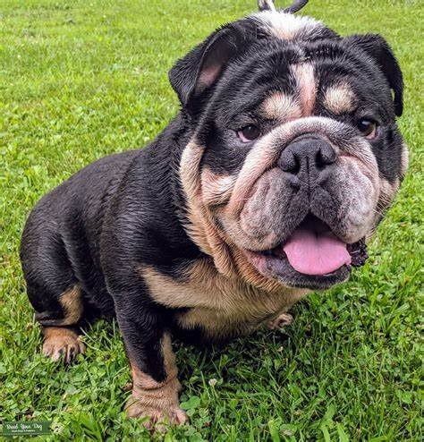

| Pomeranian |
Description |
|  |
Pomeranian is my favorite breed especially when they are small type o bear type. Pomeranian is Classed as a toy dog breed because of its small size |
| Chow Chow |
Description |
|  |
Chow Chow is known for a very dense double coat that is either smooth or rough. The fur is particularly thick in the neck area, |
| Shih Tzu |
Description |
|  |
Shih Tzus are known for their short snouts and large round eyes, as well as their ever growing coat, floppy ears, and short and stout posture. Although small in size, they are well known for their largely fun and playful personality, and calm and friendly temperament. |
| Maltese |
Description |
|  |
Maltese is a suitable indoor dog that thrives even in apartments and small confines. This breed can be difficult to housebreak, and they tend to be finicky eaters |
| Poodle |
Description |
|  |
Poodles are extremely intelligent and are easily trained. They are agile and graceful as well as smart, and they enjoy and excel in a variety of canine sports |
| Golden Retriever |
Description |
 |
Golden retrievers are very versatile. They’re known as bird dogs, family pets, service dogs for the disabled, and search and rescue dogs. |
| Doberman |
Description |
|  |
Doberman is naturally protective and originally bred to be aggressive. But this was paired with good trainability, only attacking when ordered to do so |
| Husky |
Description |
|  |
Husky is a type of dog originally bred to be used as sled dogs in snowy regions. |
| Bulldogs |
Description |
|  |
Bulldogs are sweet, devoted, and easygoing, and they want to please their owner. |
| Saint Bernard |
Description |
 |
The Saint Bernard dog breed is well known for a family companion,mostly valued for their calm and patient temperament and also has has a friendly and welcoming personality. |